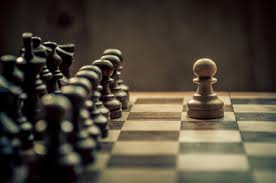
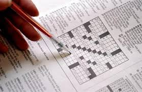
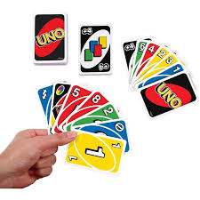
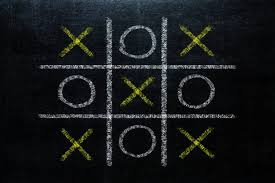
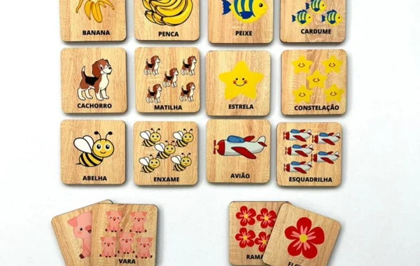
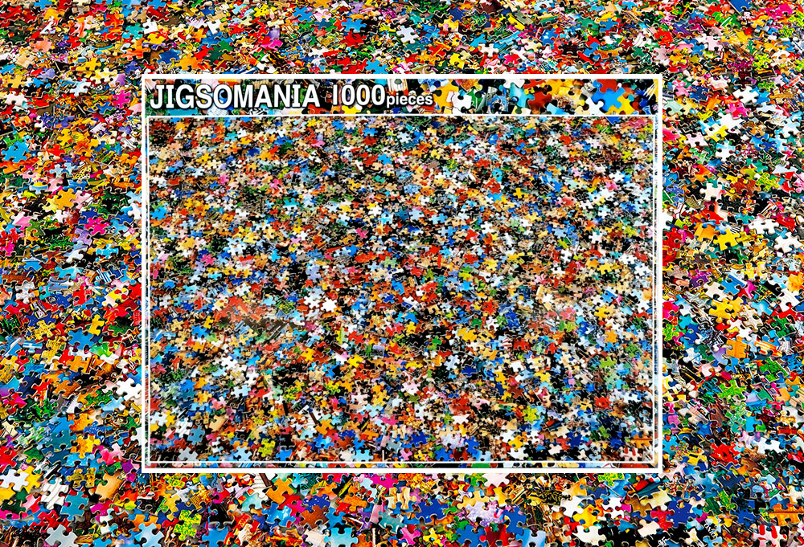
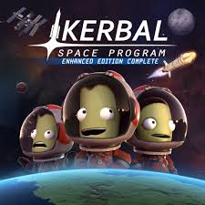
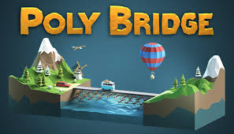

Jogos Físicos e Seus Benefícios
Os jogos físicos são fundamentais para estimular o raciocínio lógico, habilidades sociais e a criatividade, além de promoverem interações mais diretas e intuitivas. A seguir, confira alguns exemplos que podem ser usados em favor do aprendizado e desenvolvimento cognitivo dos menores.

Xadrez
O xadrez desenvolve habilidades de planejamento, pensamento lógico e antecipação, além de ajudar na concentração e paciência.

Palavras Cruzadas
Desafie seu vocabulário e raciocínio com as palavras cruzadas. Elas melhoram a memória e o conhecimento linguístico.

Uno
Uno é um jogo de cartas que desenvolve estratégias rápidas e ajuda a melhorar a tomada de decisões e o pensamento tático.

Jogo da Velha
Um clássico jogo de lógica que aprimora o raciocínio estratégico e o pensamento analítico em uma dinâmica simples e rápida.

Jogo da Memória
Estimula a memória visual e a concentração ao desafiar os jogadores a encontrar pares de figuras iguais em uma sequência.

Quebra-Cabeça
Montar um quebra-cabeça ajuda no desenvolvimento do pensamento crítico, resolução de problemas e percepção visual.
Jogos Digitais e Tecnologia
Embora a tecnologia possa ser vista como um desafio para a concentração, ela também oferece oportunidades incríveis de aprendizado. Jogos digitais podem estimular a criatividade, o raciocínio lógico e a capacidade de resolver problemas complexos, quando usados de forma consciente.

Minecraft
Um jogo de construção e exploração que estimula a criatividade, resolução de problemas e colaboração em equipe.

Terraria
Terraria combina aventura, criatividade e estratégia, promovendo o pensamento crítico e a capacidade de planejamento.

Roblox
Roblox é uma plataforma criativa que permite que os jogadores criem seus próprios jogos, incentivando o desenvolvimento de habilidades de programação e design.

Portal
Portal é um jogo de quebra-cabeça que exige lógica, raciocínio espacial e resolução criativa de problemas.

Kerbal Space Program
Simula o lançamento e operação de espaçonaves, ajudando a desenvolver conceitos de física e engenharia.

Poly Bridge
Poly Bridge é um jogo de simulação de construção de pontes que desafia os jogadores a projetar e construir estruturas para permitir que veículos atravessem com sucesso. Ele promove o desenvolvimento de habilidades em engenharia e física, encorajando a resolução criativa de problemas e a compreensão dos princípios básicos de construção e mecânica.